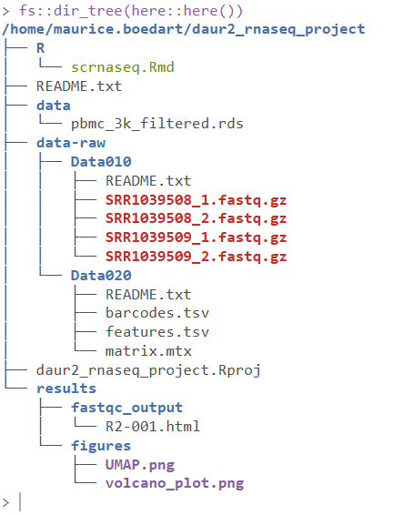
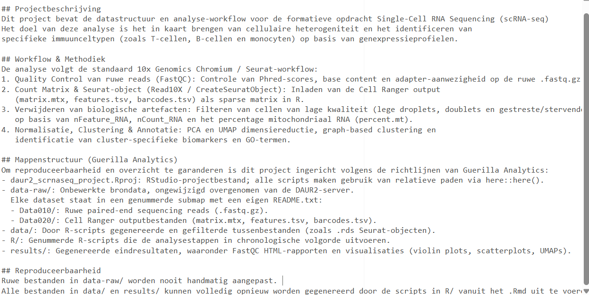
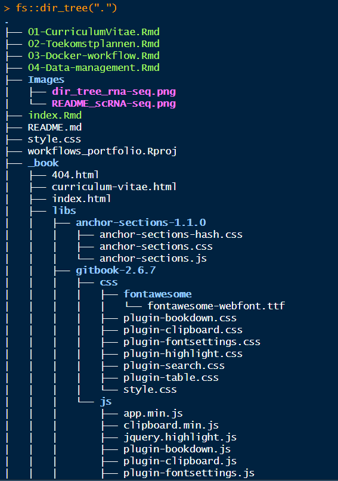
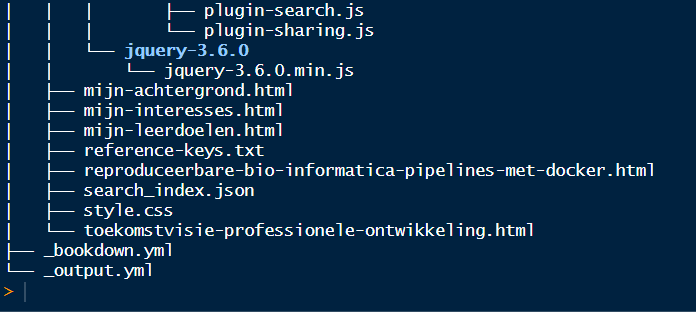
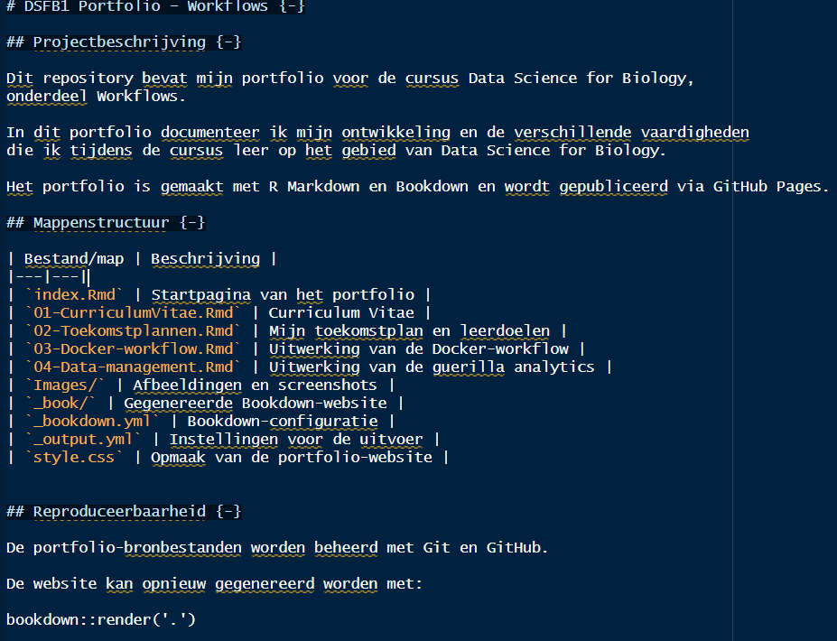

Data management
Introductie
Voor deze opdracht heb ik de principes van Guerilla Analytics toegepast op het organiseren van databestanden en mijn portfolio repository. Het doel hiervan is om bestanden overzichtelijk op te slaan, gemakkelijk terug te kunnen vinden en analyses reproduceerbaar te maken.
Een goede mappenstructuur helpt om onderscheid te maken tussen ruwe data, bewerkte data, scripts en resultaten. Daarnaast zorgt een README-bestand ervoor dat duidelijk is welke bestanden en mappen onderdeel zijn van een project.
RNA-seq DAUR2
Voor de formatieve RNA-sequencingopdracht van de DAUR2-module heb ik een aparte projectmap aangemaakt. Hierbij heb ik de bestanden van de server logisch georganiseerd volgens de principes van Guerilla Analytics.
Niet alle databestanden hoefden daadwerkelijk gedownload te worden. Voor deze opdracht was het voldoende om lege bestanden aan te maken met dezelfde bestandsnamen als de bestanden op de server.
De databestanden zijn ingedeeld op basis van hun functie. Hierbij is onderscheid gemaakt tussen ruwe data, bewerkte data, scripts en analyseresultaten. Zo kunnen FASTQ-bestanden, BAM-bestanden en count-bestanden gemakkelijk worden teruggevonden.
Daarnaast heb ik een README-bestand aangemaakt waarin de inhoud en indeling van de projectmap worden toegelicht.
Mappenstructuur RNA-seq project
Hieronder staat een screenshot van de mappenstructuur die ik voor de RNA-seq-opdracht heb gemaakt.

README RNA-seq project
Het README-bestand beschrijft de inhoud van de verschillende mappen en legt uit waar de databestanden worden opgeslagen.

Portfolio repository
Ook voor mijn eigen portfolio repository heb ik de principes van Guerilla Analytics toegepast.
Mijn portfolio is opgebouwd met R Markdown en Bookdown. De verschillende onderdelen van het portfolio zijn opgeslagen in afzonderlijke R Markdown-bestanden. Hierdoor blijft de inhoud overzichtelijk en kunnen de verschillende pagina’s afzonderlijk worden aangepast.
De repository bevat onder andere:
index.Rmd: de startpagina van mijn portfolio.01-CurriculumVitae.Rmd: mijn curriculum vitae.02-Toekomstplannen.Rmd: mijn toekomstplannen en leerdoelen.03-Docker-workflow.Rmd: de uitwerking van de Docker-workflow.04-Data-management.Rmd: deze pagina over datamanagement.Images/: afbeeldingen en screenshots die in het portfolio worden gebruikt._book/: de gegenereerde Bookdown-website._bookdown.ymlen_output.yml: configuratiebestanden voor Bookdown.style.css: het stylesheet voor de opmaak van de website.
Ik heb ook een README-bestand toegevoegd waarin de inhoud van de repository en de verschillende bestanden worden beschreven.
Door gebruik te maken van duidelijke bestandsnamen en een vaste mappenstructuur kan ik mijn portfolio gemakkelijk onderhouden en uitbreiden.
Mappenstructuur portfolio repository
Met behulp van de functie dir_tree() uit het R-package fs heb ik de volledige mappenstructuur inzichtelijk gemaakt.


README portfolio repository
Het README-bestand geeft een overzicht van de inhoud, de gebruikte technologieën en de structuur van mijn portfolio repository.
